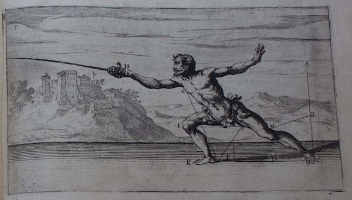

|
The lunge is the primary attack in italian fencing. As with the guard positions there are many variations but for this purpose we will be focussing on the main version, called simply "the lunge". |
| 
Pictured: A student lunging, from a plate in the Gran Simulacro |
|
The order of actions in the lunge is very important. Correct order leads to a strong well defended striking position for you and your opponent being struck. In correct order leads to ruin for you, so let's get it right!
|
|
If you have done your job right, you should now be extended fully forward and your sword should have struck your opponent. Now you are free to recover to your guard position, which you do by following the order of the lunge in reverse: step back, shoulders back, arm back. Bonus knowledge: distance between yourself and you opponent is referred to as misura or measure, and the distance at which you can strike with a lunge is called your misura larga or wide measure. |